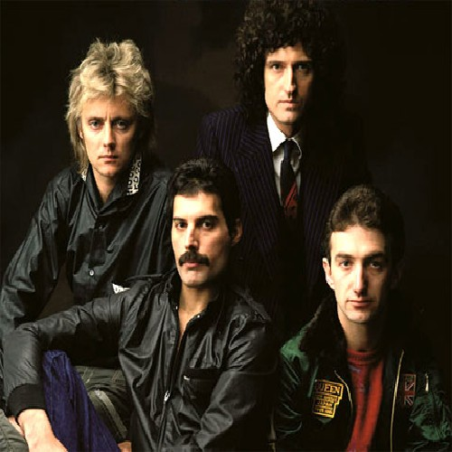

Queen es una banda británica de rock formada en 1970 en Londres por el cantante y pianista Freddie Mercury, el guitarrista Brian May y el baterista Roger Taylor. El bajista John Deacon llegaría un año después al grupo para completar la formación clásica. Tras el deceso de Mercury en 1991, y el retiro de Deacon en 1997, los integrantes restantes, Brian May y Roger Taylor, continúan trabajando bajo el nombre Queen o Queen +, por lo que la banda aún se considera activa.
Canción más popular: Bohemian Rapsody
Se la dejamos a continuacion por si desea escucharla dandole al boton play:
En el recorrido podemos observar una pintura de uno de los conciertos de Queen en el que se encuentran los cuatro integrantes, Freddy, el vocalista se encuentra con su típica ropa de colores llamativos mientras sostiene un micrófono, Brian May, el guitarrista está tocando su guitarra en compañía del bajista John Deacon que está tocando con el torso recto y las piernas abiertas y atrás esta Roger Taylor tocando la batería.